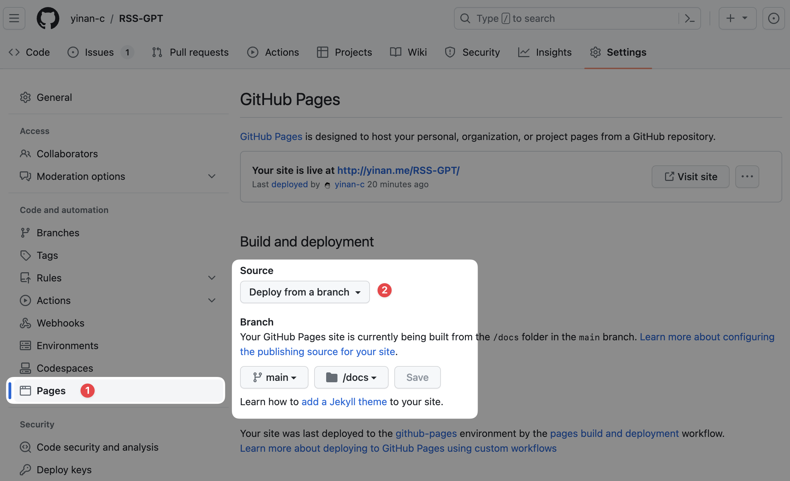

RSS-GPT 使用指南
项目地址以及功能介绍
需要准备的东西
- GitHub 账号
- OpenAI API Key （可以在这里建立账号申请）
1 GitHub Actions 部署
大致原理是使用 GitHub Actions 定时运行 Python 脚本, 脚本调用 OpenAI API 生成总结附在 RSS 原文之前, 然后生成一个新的 xml 文件, 然后把文件 commit 到仓库中 rss/ 文件夹内, 文件夹内所有内容都通过 Github Actions 部署在 GitHub Pages 上, 这样就可以通过你的 GitHub pages 地址访问到这个 xml 文件, 可以在任何支持 RSS 的阅读器中订阅你自己生成的 feeds。
如果你不想部署在 GitHub Pages, 应该也可以通过直接访问仓库中的 xml 原文件（地址以 raw.githubusercontent.com 开头）来订阅, 比如说我这个仓库的 xml 文件地址是 https://raw.githubusercontent.com/yinan-c/RSS-GPT/main/rss/brett-terpstra.xml。
1.1 Fork项目
进入项目 RSS-GPT, 然后 fork 项目到自己的仓库。
1.2 记录三个需要的参数
U_NAME
就是 git commit 用的用户名, 一般可以用你的 GitHub 用户名, 你的 GitHub 主页地址的最后一段就是你的用户名, 比如 https://github.com/yinan-c, 用户名就是 yinan-c。
U_EMAIL
就是 git commit 用的邮箱, 是你注册 GitHub 时的邮箱, 可以在 GitHub 设置页面
WORK_TOKEN
因为项目涉及使用脚本操作仓库内容,所以需要给脚本修改仓库内文件的权限,需要申请一个 Repository Secret 令牌。
点击 GitHub 主页右上角自己的头像, 点 "Settings" 进入设置页面
点击左侧菜单栏一列最下方的 “< > Developer settings"
点开左侧菜单栏下方的 “ 🔑 Personal access tokens", 选择 ”Tokens (classic)“, 点开左上角的 "Generate new token", 选择第二项 "Generate new token (classic)" 生成一个新的 token。
配置新建的token

Note: RSS-GPT
Select scopes: 勾选前两栏 "repo" 和 "workflow" 内的所有选项
Expiration: 选 "No expiration" (无期限)
点击页面最下方的 "Generate token"

点击完后复制token, 注意一定要在此页面复制好, 离开这个页面你就再也看不到token了。错过就只能按照上面的步骤重新生成一个了
1.3 设置 Repository Secrets
进入你 fork 的 repository, 点击上方菜单栏的 "Settings", 然后点开左侧菜单栏的 "Secrets and variables", 选择 "Actions", 然后点击右上角的 "New repository secret"。

给翻译仓库添加 U_NAME, U_EMAIL, WORK_TOKEN 三个 secret, 注意一次只能添加一个, 添加完一个后再添加下一个。
Name: U_NAME, U_EMAIL, WORK_TOKEN
Value: 分别为 U_NAME 上面所说的你的用户名, U_EMAIL 是上面所说的你的邮箱, WORK_TOKEN 是你刚刚复制的 token
点击 “Add secret“
1.4 给需要的权限
开启 GitHub Actions 访问 Pages 的权限

点击 “Settings”
在左侧 “Code and automation” 下找到 “Pages” 点击进入
将 “Source" 设置成 "GitHub Actions", 然后点击 “Save”
2 设置需要合并, 过滤, 总结的 RSS 源
进入项目, 点击上方菜单栏的 "Code", 点击进入 "config.ini" 文件, 点击右上角的铅笔图标, 编辑代码, 设置你需要的订阅源, 前两行的内容不要动。
[cfg]
base = "rss/"
然后在接下来的三行更改目标语言, 关键词数量, 和总结长度。之后的代码是 feed-specific 的配置, 格式如下, 首先是3个必填项目:
[source001]: 订阅序号, 从001开始增长, 注意请确保编号不要重复, 不然代码会报错name = "brett-terpstra": 生成订阅源的名称, 只允许包含英文字母(a-z A-Z)、数字(0-9)、(-,_,.,~) 4个特殊字符url = "https://brett.trpstra.net/brettterpstra": 原始RSS订阅链接, 可以包含多条, 用逗号分隔max = "10": 两次刷新间隔之间需要总结的文章数量。比如你设置为10, 那么每次刷新时, 会把最新的10条文章进行总结。如果设置为0, 则不会总结任何文章, 返回原始条目。
接下来是关于过滤的可选配置: 注意三个配置必须要同时设置或者同时不设置, 不能只设置其中一个或者两个, 否则会报错。
filter_apply = "title": 过滤条件需要应用在 "title"（标题）, "article" （正文内容）or "link" （链接）filter_type = "exclude": 过滤类型: ”include“（包含）, “exclude“（不包含）, or ”regex match“（正则匹配）or ”regex not match“（正则不匹配）filter_rule = "TextExpander": 过滤内容, 字符串或者正则表达式
点击最下边的 “Commit changes” 提交修改。
3 修改 README 输出
点击 “Code” , 点击进入 “main.py" 文件
点击笔形图标, 编辑代码, 进入第 289 行, 修改 "https://yinan-c.github.io/" 至你的 GitHub Pages 地址, 也就是把 yinan-c 改成你自己的用户名。
（可选）根据你的需求, 可以在 113 - 129 行修改 promt, 让 GPT 生成更符合你需求的总结。
点击最下边的 “Commit changes” 提交修改。
4 测试 GitHub Actions
进入项目, 点击上方菜单栏的 "Actions", 点击 “cron_job", 选择 “Run workflow"
等待运行成功会显示绿色的勾, 运行失败会显示红色的叉。如果出现红叉, 一般都是你修改ini文件时, 什么地方写错了, 或者权限、token 设置错误。请仔细检查。
如果前边没出现错误 (主要是actions上没出现红叉), 那么你可以在项目的介绍页看到你的订阅源
点击那个 “查看Rss-Translation” 链接,就可以跳转到订阅列表页,每条项目的 -> 左侧的是原始订阅链接, 右侧是转换后的链接, 这个链接和其他的RSS订阅链接一样处理就好了。
注意
- 默认设置是每2小时运行一次脚本, 如果需要改的更短请修改
.github/workflows/cron_job.yml文件第7行,比如
- cron: '0 */2 * * *' # run every 2 hours
- cron: '0 */1 * * *' # run every 1 hours
我设定的 prompt 是让 AI 帮助提取 关键词 + 总结 并且让 AI 自动排版, 有些时候 AI 排版的效果并不是很好, 你也可以自己需要修改
main.py文件第 113 - 129 行的 prompt。如果有任何问题, 欢迎 email 交流。